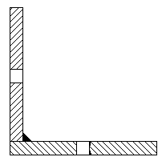
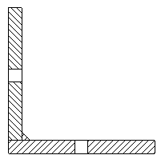

Annotation tab (Drawing View Properties dialog box)
You can apply different annotation line styles to the drawing view you are editing using the Annotation tab in the Drawing View Properties dialog box.
- Show bend centerlines
-
Displays the bend centerlines on drawing views of sheet metal part flat patterns.
- Bend up centerline style
-
Sets the style for centerlines on bends in the up direction.
- Bend down centerline style
-
Sets the style for centerlines on bends in the down direction.
Note:In the part or sheet metal model, when the Derive bend direction from drawing view check box is selected on the Annotation tab (Solid Edge Options dialog box), then the bend direction centerline styles displayed on the flat pattern drawing are based on the up and down drawing view directions.
To learn more, see Creating flat pattern drawings.
- Derive bend direction from drawing view
-
Allows the flattened drawing view to determine bend direction rather than the model. (By default, bend direction is derived from the face that is designated the top face when a sheet metal part is flattened.)
Tip:Use the Derive bend direction from drawing view option to keep the bend direction properly aligned with the drawing view that you place.
-
When this box is checked, the bend direction shown in a top drawing view will be the opposite of that shown in a bottom drawing view.
-
When this box is checked, the bend up and bend down centerline styles also are applied based on the drawing view bend direction.
-
When this box is unchecked, the bend direction will be the same for both top and bottom views.
-
- Show deformation feature origins
-
Displays the feature origin used to model deformed features, such as dimples, drawn cutouts, and louvers.
- Origin edge style
-
Sets the style for the feature origin.
Refer to these help topics:
- Show deformation feature profiles
-
Displays the feature profile used to model deformed manufactured features, such as beads, dimples, and drawn cutouts.
- Profile edge style
-
Sets the style for the feature profile.
Refer to the help topic, Adding sheet metal deformation features.
- Show flowlines
-
Displays the flow lines in a drawing view of an exploded assembly.
- Exploded flowline style
-
Sets the style for exploded assembly flow lines.
- Show boundary edges
-
Provides line style control for boundary edges in cropped drawing views and in broken-out section views.
-
In cropped drawing views—When the check box is selected, applies a thin-line style to the cropping boundary edges where the drawing view boundary intersects the model.
When the check box is deselected, no cropping boundary edges are displayed.
-
In broken-out section views—When the check box is selected, applies a thin-line style to the hatch boundary edges in broken-out views that are created using the same drawing view to draw the profile and to apply the section.
When the check box is deselected, hatch boundary edges are displayed, but they use the Visible edge style setting on the Display tab (Drawing View Properties dialog box).
- Boundary edges style
-
Specifies the line style for displaying cropping boundary edges and hatch boundary edges.
-
- Show threads in Section Only section views
-
Displays hole threads when the cut is along the axis of the hole shown when you create a thin-section view using the Section Only option.
Note:You can create internal threaded holes in the model when you use the Hole command and set the Type to Threaded on the Hole Options dialog box.
To learn about creating threaded holes in the model, see Threaded features.
For more information, see Drawing view cropping.
- Solid fill sectioned weld beads
-
When selected, specifies that all cut weld bead faces in the section drawing view are displayed using the solid fill style color.

When deselected, the faces are displayed using the underlying hatch pattern in the fill style.

This option overrides the default setting on the Edge Display tab, in the Solid Edge Options dialog box.